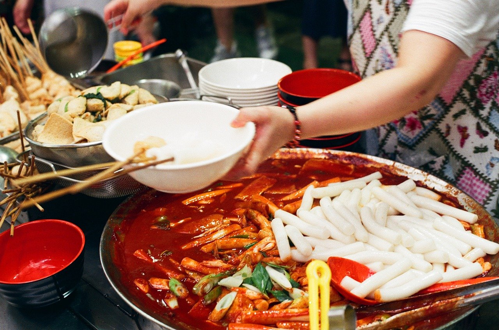
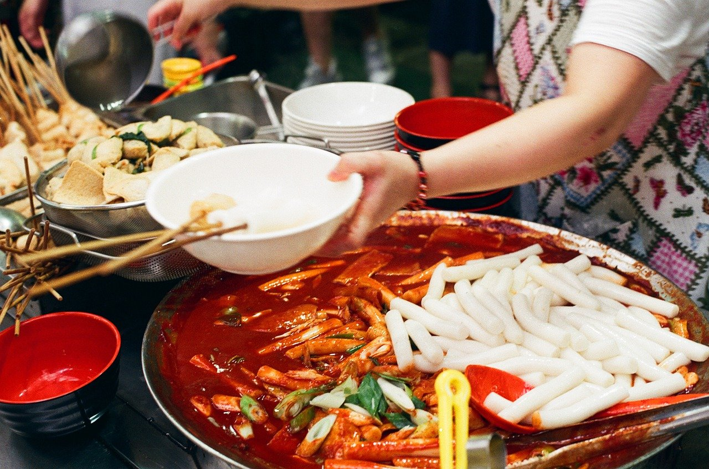
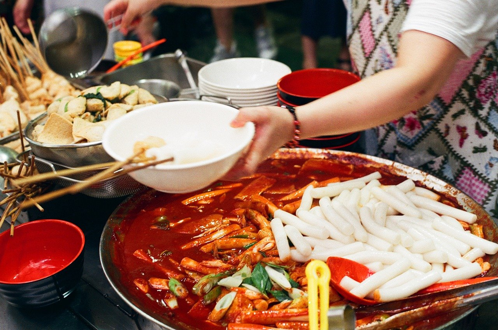

Tteokbokki Recipe: A Spicy Korean Street Food Adventure

Tteokbokki, or spicy Korean rice cakes, is one of my all-time favorite comfort foods. The chewy texture of the rice cakes paired with the fiery, slightly sweet sauce is absolutely addictive. I first discovered this dish at a Korean street food stall, and I was hooked from the first bite. It’s the kind of meal that warms you up from the inside out, perfect for sharing with friends or indulging on a cozy evening at home. Making tteokbokki from scratch is surprisingly simple, and I’m so excited to share my take on this beloved Korean classic with you!
Measurements/Ingredients
1 lb (450g) Korean rice cakes (tteok)
4 cups water
1 sheet dried kelp (kombu), about 4x4 inches
4-5 dried anchovies (optional, for authentic flavor)
Prepare the Rice Cakes
If your rice cakes are frozen, soak them in warm water for 10-15 minutes to soften. Drain and set aside.
Make the Broth
In a large skillet or shallow pot, combine the water, dried kelp, and anchovies (if using). Bring to a boil, then reduce the heat and simmer for about 10 minutes. Remove the kelp and anchovies, leaving behind a flavorful broth
Create the Sauce
Stir the gochujang, gochugaru, soy sauce, sugar, sesame oil, and minced garlic into the broth. Mix well until the sauce is smooth and vibrant red. Taste and adjust the spice level or sweetness as needed.
Cook the Tteokbokki
Add the rice cakes and fish cakes to the pan, stirring to coat them in the sauce. Simmer on medium heat for about 10 minutes, stirring occasionally, until the rice cakes are tender and the sauce thickens to a glossy consistency.
Finish and Garnish
If you're using hard-boiled eggs, add them during the last few minutes of cooking, allowing them to soak up some of the sauce. Sprinkle sliced green onions over the top before serving for a pop of color and freshness.
Tteokbokki isn't just a dish—it's a sensory experience. From the vibrant red sauce to the irresistible chew of the rice cakes, every bite is a little celebration. Making tteokbokki at home brings me back to the bustling streets of Seoul, where the aroma of gochujang wafts through the air, and every food stall offers its own unique take on this classic snack.
Whether you're a spice lover or simply curious about Korean cuisine, tteokbokki is the dish to try. It's comforting, exciting, and absolutely packed with flavor. Trust me, once you taste it, you’ll be craving it all the time!
 
